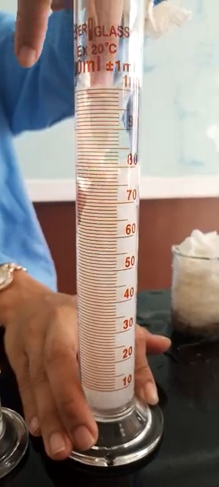

Q1: What is being simulated by putting bananas and crackers in the zip lock? The bananas and crackers represent the food, particularly the proteins, being put through the digestive system.
Q2: What is being simulated by the addition of water? The water simulates the submersion of the food in a liquid to make it soggy and the dilution of the stomach acid as represented by the lemon juice.
Q3: What does the zip-locked bag represent? The zip-lock bag is representing the stomach, as it contains food and digestion fluids.
Q4: What does crushing the food simulate? Crushing the zip-lock bag demonstrates mechanical digestion.
Q5: What is being simulated by the addition of orange juice? The addition of the lemon juice starts chemical digestion because it is quite acidic.
Q6: What do you think are the possible biomolecule components of the food inside? The food may contain a wide variety of proteins, fat and carbohydrates. Some sugars like glucose are also included.
Transfer Stage
Q7: What is being simulated by the liquid flowing out of the stocking? The stocking represents the large intestine and the liquid flowing out of it is analogous to the large intestine's function to extract fluids.
Q8: What does the tray represent? The tray has the function of collecting the last liquid components of the chyme in the large intestine.
Q9: What is left inside the stocking? The remaining residue in the stocking is the solid waste.
Q10: What is being simulated by pushing the partially solidified content? Pushing the partially solidified content simulates the excretion of solid waste through the anus.
Absoprtion

Q11: Which paper towel absorbed the largest amount of water? What could be the possible explanation? The last one, with the most folds. The most sensible explanation is that due to an increased number of surface areas than the last, more water would be absorbed compared to the previous ones.
Q12: In which organ of the digestive system can you compare the paper towels? How does the structure of the organ help in its function? You could compare the paper towels to the small intestine. As we see with the paper towels, the more surface area it has, the more water it can absorb. The same goes for the small intestine which is a long, long organ to aid with its plentiful absorption.
Bile Action
Q13: Explain the role of bile in digestion. Is it involved in chemical or mechanical digestion? Bile aids in chemical digestion. Bile helps by emulsifying fats in the duodenum.
Conclusion
In conclusion, this simulation provided useful insights to the ins and outs of digestion, whether it be mechanically crushing a bag, chemically preparing pure lemon juice or absorbing fluids with a paper towel. As students, we got a step closer to understanding what happens when we eat. With the many digestive problems people can have, it is important to become knowledgeable in how or why they occur. So this is why simulation can be a vital tool in diagnosing mysterious or uncommon digestive issues.